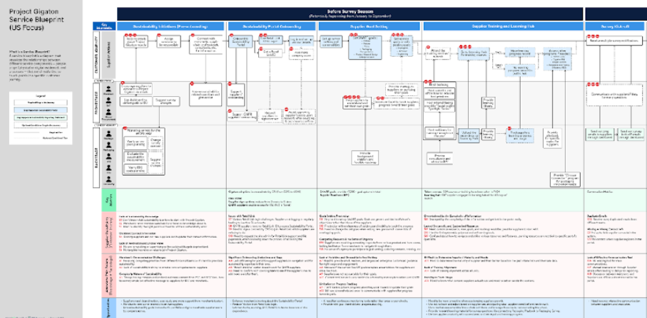
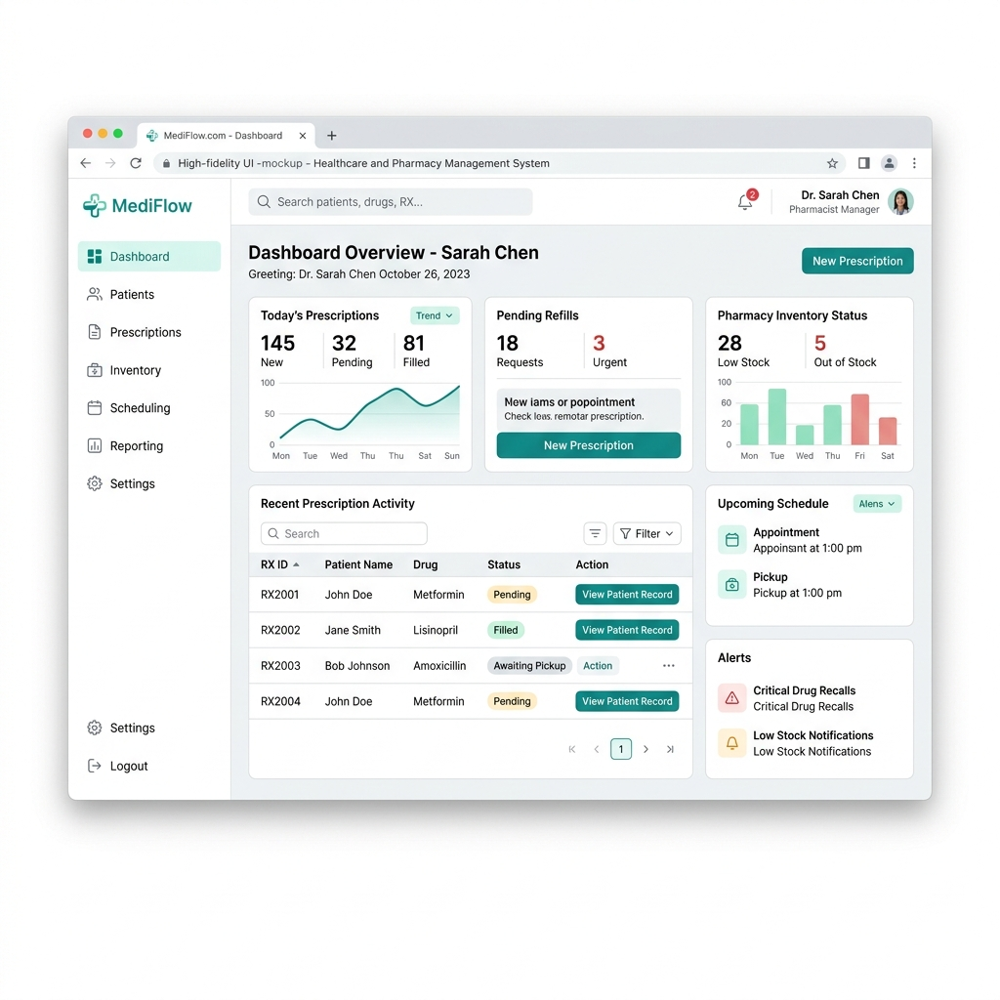
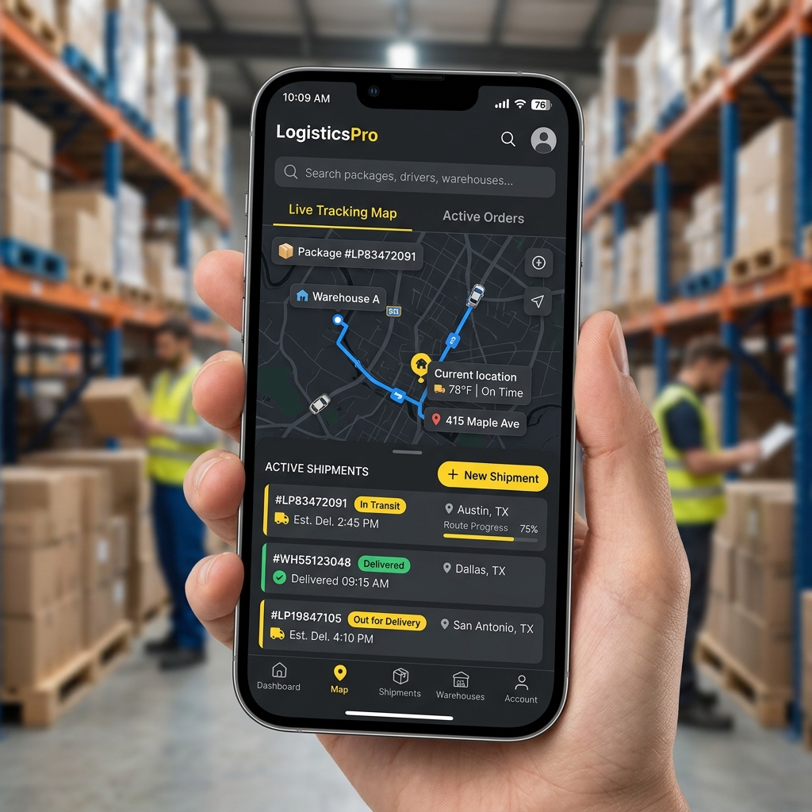

Hsinya Hung is a Dallas-based service designer and UX researcher.
With 8 years of experience at JPMorgan Chase, Microsoft, Walmart, and design agencies, I lead end-to-end customer experience innovation by combining research, design, and strategic thinking to navigate complexity and drive meaningful impact.

Chase Global Customer Platform
Led service design for FinTech enterprise platformization, de-risking single-entry onboarding architecture.

Walmart Compliance Systems
Generated a 3-year joint tech roadmap with an estimated $10 Million in savings.

NextGen B2B Industrial Coding Solution
Achieved over $10M in global sales and served 300+ business clients in 100+ countries.

Taiwanese National PharmaCloud System
Increased usability by 26% through redesigning the information architecture and user experience.

Warehouse and Logistic Tracking
Increased productivity and communication among warehouse managers and logistics stakeholders.